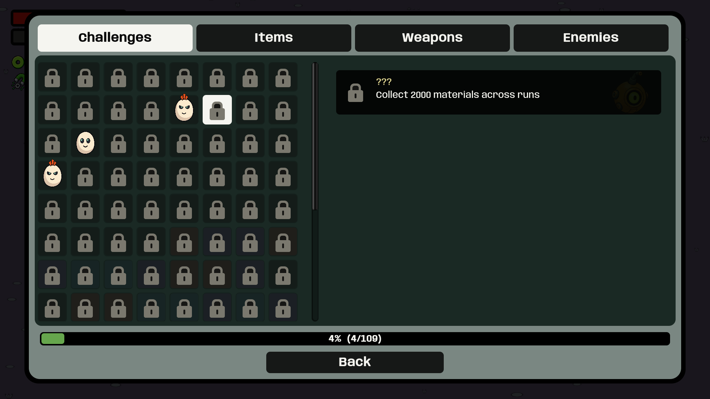
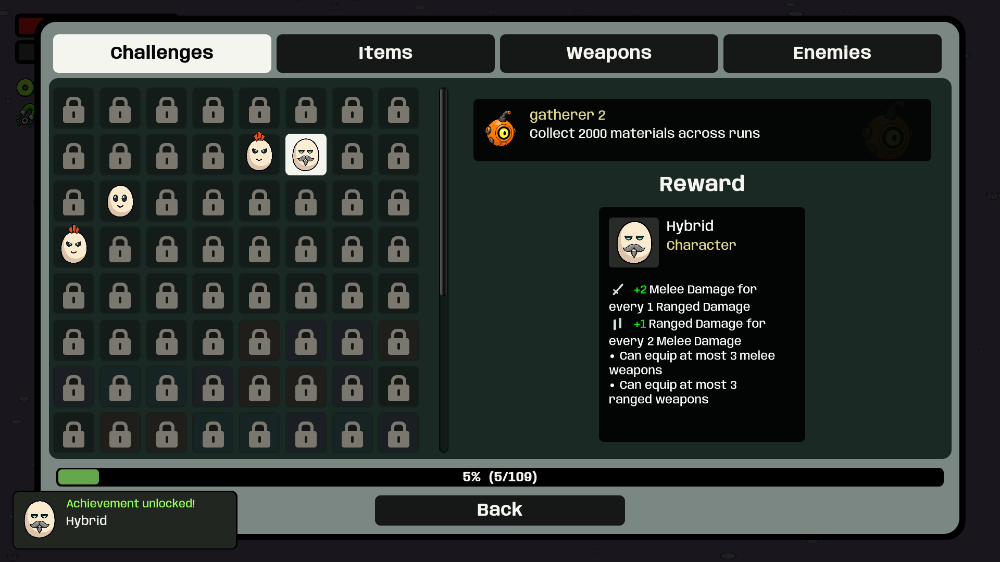

Locked achievements reveal only the requirement. Completed achievements show a separate reward card. Grid backgrounds are more transparent; selection stays white.


Built-player captures using staged progression. Play updated build